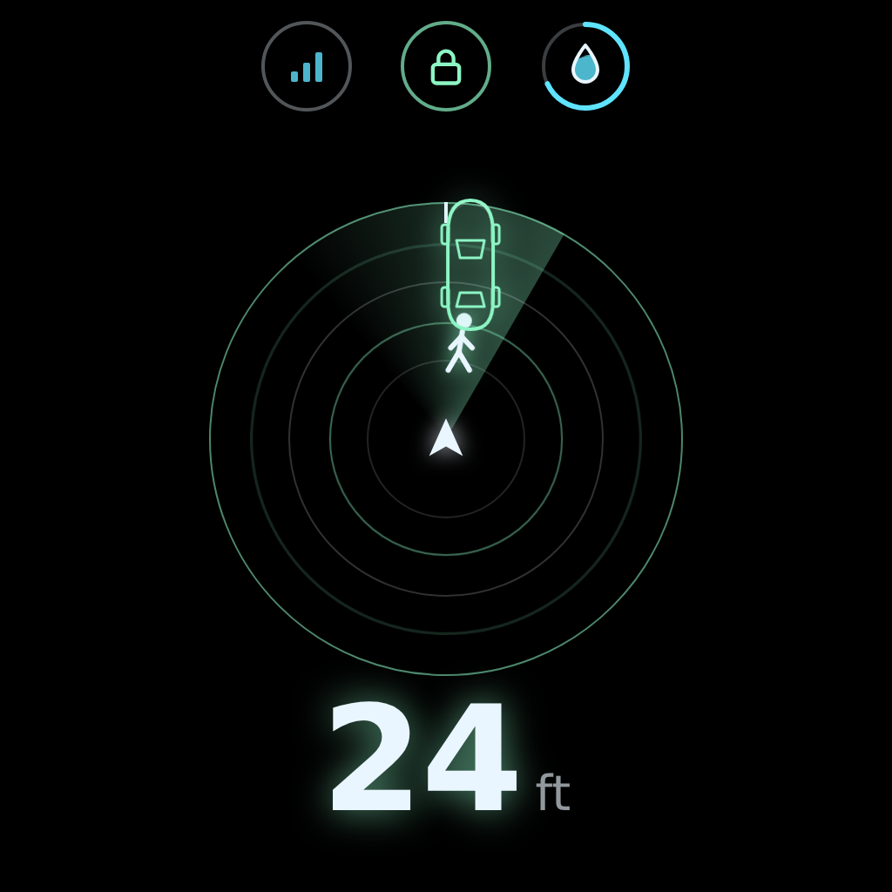
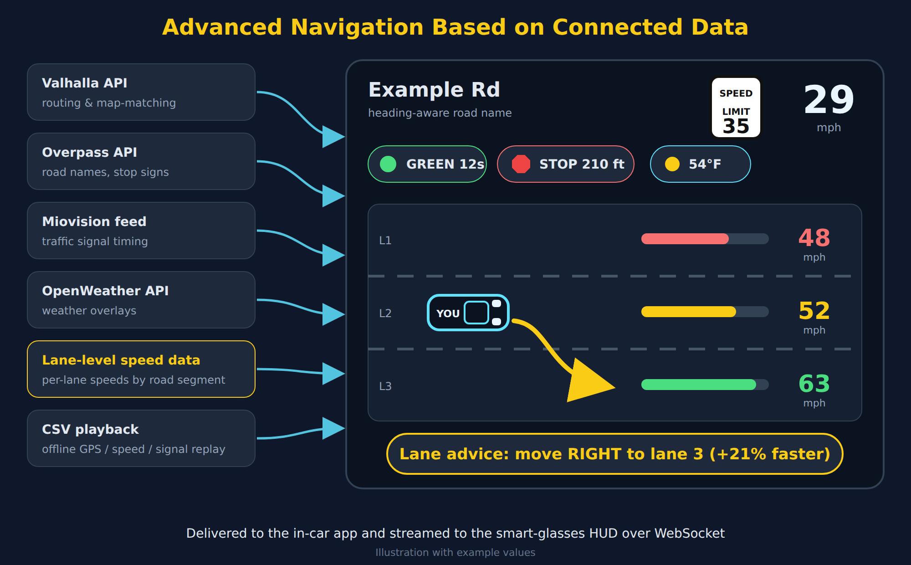
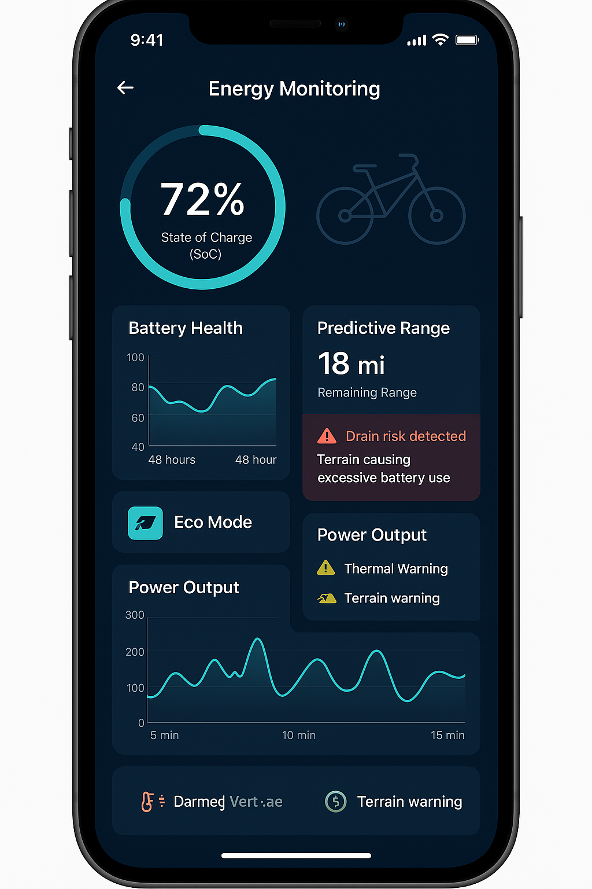
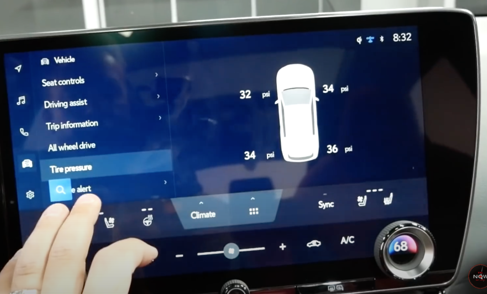
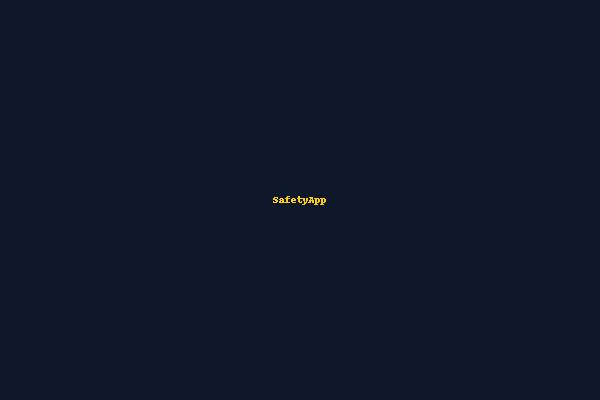
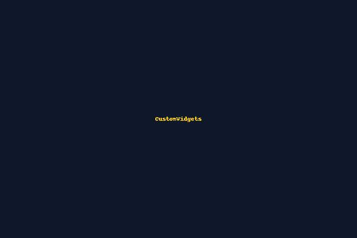
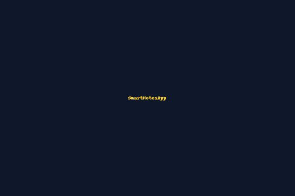

Android Developer with 4.5+ years of experience specializing in Kotlin, Jetpack Compose, MVVM, and Firebase. I build scalable, modern Android apps with clean architecture, and I work with connected-vehicle data (CAN) and smart-glasses displays (Viture, Xreal, Magic Leap).
I've delivered production-ready apps, debugged performance bottlenecks, and automated CI/CD pipelines, working in agile teams with backend, QA, and design partners across the full SDLC, from planning to deployment.
I specialize in Android development, with a strong background in mobile architecture, connected-vehicle data, smart-glasses HUDs, and app deployment pipelines.
Akkodis Group (Client: General Motors)
Aug 2025 – Present
Skills: Kotlin, Java, Android SDK, Coroutines, Hilt, MVVM, OpenGL ES, CAN bus, XR / smart glasses (Viture, Xreal, Magic Leap), Navigation Systems, Connected Vehicle Data, Git, Agile/Scrum.
People Tech Group (Client: General Motors)
Dec 2019 – Jun 2023

Animated radar screen for Viture, Xreal and Magic Leap glasses: sonar rings, a walking figure driven by real GPS movement, and icon status chips for CAN link, lock, fuel and window, with the last known vehicle status kept after a disconnect.
Tech: Kotlin, OpenGL ES, Canvas, CAN bus
Smart Glasses
Navigation for connected vehicles: Valhalla routing and map-matching, road names, stop signs and traffic-signal timing (Overpass, Miovision), weather overlays, lane-level speed data with lane map matching, and a lane-change recommendation algorithm, plus a CSV playback framework to replay drives offline.
Tech: Kotlin, Coroutines, Valhalla, Overpass, Miovision, OpenWeather, JTS
Connected VehicleReal-time HUD streaming live vehicle data over WebSocket, with a wireless RTSP camera preview (Media3 ExoPlayer) and double-tap switching between navigation and camera.
Tech: Kotlin, WebSocket, Media3 ExoPlayer, MVVM
Smart Glasses
A real-time Android app that monitors electric bike battery health, performance metrics, and predictive alerts using CAN data.
Mobile App
Research UI for evaluating driver distraction and layout preferences
UI/UX Research
Safety-focused emergency alert app with real-time location tracking and alert broadcasting to selected contacts.
Tech: Kotlin, Firebase Realtime Database, Google Maps SDK, MVVM
GitHub RepoConversational AI chatbot using the OpenAI API and Jetpack Compose, with reusable UI components.
Tech: Kotlin, Jetpack Compose, Coroutines
GitHub Repo
Reusable Jetpack Compose widgets with a modular design system for UI consistency across apps.
Tech: Kotlin, Jetpack Compose
GitHub Repo
Advanced notes app with reminders, snooze notifications, calendar/date filtering, search, dynamic theming, and export to TXT/PDF.
Tech: Kotlin, Compose, Room, Hilt, MVVM, Material 3
GitHub RepoModular news app with real-time language toggle, AI-based summarization, trending carousel, article sharing, and dark/light theme.
Tech: Kotlin, Jetpack Compose, Hilt, MVVM, StateFlow
GitHub RepoUniversity of North Texas | Denton, TX
May 2025
Jawaharlal Nehru Technological University | India
2019
You can view or download my full resume below.
I'm currently available for contract work or full-time roles. Whether you have a question or just want to say hi, feel free to reach out!